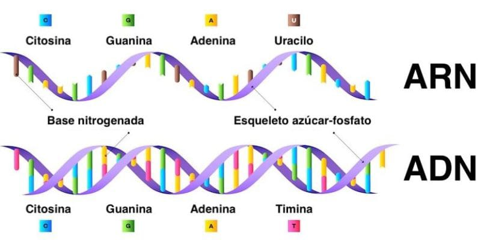

Macromeleculas
Carbohidratos
Los carbohidratos, también conocidos como glúcidos o azúcares, son moléculas orgánicas compuestas por carbono, hidrógeno y oxígeno. Son una fuente importante de energía para el organismo y se encuentran en muchos alimentos, como cereales, frutas, verduras y productos lácteos.
Los carbohidratos se clasifican en tres grupos principales: monosacáridos, disacáridos y polisacáridos. Los monosacáridos son azúcares simples, como la glucosa y la fructosa. Los disacáridos están compuestos por dos monosacáridos unidos, como la sacarosa (azúcar de mesa) y la lactosa (azúcar de la leche). Los polisacáridos son moléculas más complejas formadas por la unión de muchos monosacáridos, como el almidón y la celulosa.
Los carbohidratos son una fuente de energía rápida y fácilmente disponible para el organismo. Cuando se consumen, se descomponen en monosacáridos que se absorben en el torrente sanguíneo y se utilizan como combustible para las células. Además, los carbohidratos también desempeñan un papel importante en la formación de estructuras celulares, como la pared celular de las plantas.
Es importante tener en cuenta la calidad de los carbohidratos que se consumen. Los alimentos ricos en carbohidratos refinados, como azúcares y harinas procesadas, tienden a tener un alto índice glucémico, lo que significa que se digieren y absorben rápidamente, lo que puede provocar picos rápidos en los niveles de azúcar en la sangre. Por otro lado, los alimentos ricos en carbohidratos complejos, como granos enteros, legumbres y vegetales, tienden a tener un índice glucémico más bajo y proporcionan una energía más sostenida.
En resumen, los carbohidratos son una fuente esencial de energía para el cuerpo humano. Es importante elegir fuentes de carbohidratos saludables y equilibrar su consumo con otros nutrientes para mantener una dieta saludable y variada.
Proteínas
Las proteínas son macromoléculas esenciales para la vida. Están compuestas por cadenas de aminoácidos, que se unen mediante enlaces peptídicos. Son fundamentales para el funcionamiento de nuestras células, ya que desempeñan diversos roles en el organismo.
Existen diferentes tipos de proteínas, cada una con funciones específicas. Algunas proteínas actúan como enzimas, catalizando reacciones químicas en el cuerpo. Otras cumplen funciones estructurales, como las proteínas del citoesqueleto que mantienen la forma y estructura celular. También hay proteínas de transporte, como las hemoglobinas que transportan oxígeno en la sangre.
Las proteínas también contribuyen a la regulación y el control del organismo. Participan en la regulación del metabolismo, el sistema inmunológico y la transmisión de señales en el sistema nervioso. Además, las proteínas son responsables de la contracción muscular y forman parte de estructuras como el colágeno en los tejidos conectivos.
La obtención de proteínas se logra a través de la alimentación. Los alimentos de origen animal, como carne, pescado, huevos y productos lácteos, son fuentes ricas en proteínas completas que contienen los aminoácidos esenciales en cantidades adecuadas. Sin embargo, también se pueden obtener proteínas de origen vegetal, como legumbres, cereales, nueces y semillas, aunque es necesario combinar diferentes fuentes vegetales para asegurar una ingesta completa de aminoácidos esenciales.
En resumen, las proteínas son moléculas claves para el funcionamiento de nuestro organismo. Además de proporcionar estructura a las células y tejidos, también cumplen funciones vitales en el metabolismo, el sistema inmunológico, la regulación y la transmisión de señales. Una alimentación adecuada y equilibrada es fundamental para asegurar una ingestión suficiente de proteínas y aminoácidos esenciales.
Ácidos nucleicos
Los ácidos nucleicos son macromoléculas esenciales para la vida que se encuentran en todas las células. Son responsables de almacenar y transmitir la información genética, así como de sintetizar proteínas importantes para el funcionamiento celular.
Hay dos tipos principales de ácidos nucleicos: el ácido desoxirribonucleico (ADN) y el ácido ribonucleico (ARN).
El ADN es una doble hélice compuesta por dos cadenas de nucleótidos que se unen mediante puentes de hidrógeno. Cada nucleótido está formado por un azúcar (desoxirribosa), un grupo fosfato y una base nitrogenada (adenina, timina, citosina o guanina). La secuencia de estas bases a lo largo de la cadena de ADN determina la información genética almacenada en el genoma de un organismo.
El ARN es similar al ADN en términos de estructura básica, pero en lugar de la timina como base nitrogenada, contiene uracilo (U). El ARN puede existir en forma de una sola cadena o puede plegarse en estructuras tridimensionales más complejas. Cumple diversas funciones en la célula, incluyendo la transcripción del ADN en ARN mensajero (ARNm), que es luego traducido en proteínas en el proceso de síntesis de proteínas.
Además del ADN y el ARN, existen otros ácidos nucleicos menos comunes, como el ácido nucleico bacteriano (ARNb) y los ácidos nucleicos modificados presentes en algunos organismos y virus.
Los ácidos nucleicos son de vital importancia para la herencia genética, la evolución y el funcionamiento celular. Su estudio ha sido fundamental en el campo de la genética y la biología molecular, permitiendo avances significativos en la comprensión de cómo se transmiten y expresan los genes, así como en el desarrollo de técnicas como la secuenciación del ADN y el ARN.

REGRESAR